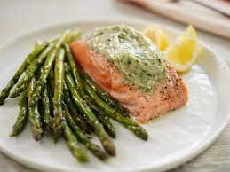

Salmon Foil Packets

It's the food...from above
Just found these....They goood.
Ingredients
- 1/2 pound salmon fillets
- 1 tablespoon vegetable broth
- 3/4 tablespoon fresh lemon juice, or to taste
- 1/2 tablespoon of your favorite hot sauce
- 2 teaspoons minced garlic
- Salt and fresh ground black pepper, to taste
- 1 1/2-2 tablespoons butter, diced into small cubes
- 1 tablespoon fresh chopped parsley or cilantro
- 1/2 lb medium-thick asparagus, woody ends trimmed
Steps
- To prepare the oven-baked salmon in foil packs: Preheat your oven to 425. Cut a sheet of 14x12 inch heavy-duty aluminum foil, then lay each piece separately on the countertop. Combine broth, lemon juice, and hot sauce in a small bowl.
- Season both sides of the salmon fillets with salt and pepper and divide the salmon onto the aluminum foil near the center, then place trimmed asparagus on one side of the salmon, following the long direction of the foil.
- Adjust the salmon fillets' seasoning with more salt and pepper, then sprinkle garlic on top. Drizzle the mixture of broth, lemon juice, and hot sauce generously over the salmon fillets and asparagus.
- Divide butter pieces evenly among the foil packets, layering them over the salmon fillet and asparagus
- Wrap salmon foil packets in and crimp edges together, then wrap ends up. Don't wrap too tight - keep a little extra space inside for heat to circulate.
- Transfer the salmon foil packs to a baking sheet and bake salmon in the oven, sealed side upward, until salmon has cooked through, about 15 minutes
- Carefully unwrap the baked salmon in foil packets, drizzle with more lemon juice, garnish with fresh parsley or cilantro and a slice of lemon. Enjoy!